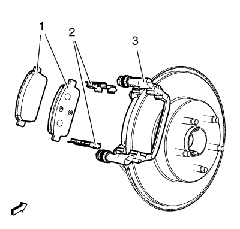
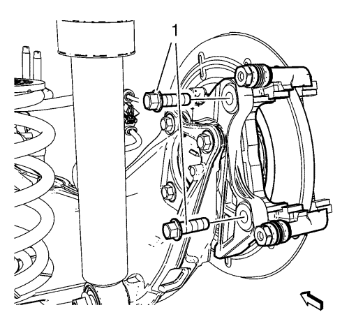

Sustitución del soporte de la pinza del freno trasero
Procedimiento de desmontaje
Advertencia: Consulte Advertencia relacionada con el polvo procedente de los frenos en la sección Prólogo.
- Elevar el vehículo y soportarlo de manera adecuada. Consultar Elevación y soporte en alto del vehículo .
- Desmonte la rueda del vehículo. Consultar Desmontaje y montaje de la rueda y el neumático .

Atención: Sujete las pinzas de freno con alambre mecánico fuerte o equivalente cuando se separen del montaje y aún esté conectado el tubo flexible de freno hidráulico. Si no se sujetan las pinzas de esta manera, el tubo flexible de freno tendrá que soportar el peso de las pinzas, lo que puede provocar que se dañe el tubo flexible de freno y esto, a su vez, puede provocar una fuga de líquido de frenos.
Nota: Extraiga y deseche los pernos guía de la pinza de freno.
- Desmonte la pinza de freno del soporte de la pinza de freno (3) y apoye la pinza de freno con un cable mecánico resistente o equivalente. NO desconecte de la pinza el latiguillo del freno hidráulico. Consultar Sustitución de la pinza del freno trasero → con amortiguador → sin amortiguador .
- Extraiga las pastillas de freno del soporte de la pinza de freno (3).
- Extraiga las fijaciones de pastilla de freno del soporte de la pinza de freno.

- Desmonte y DESECHE los pernos de soporte de la pinza de freno (1).
- Desmonte el soporte de la pinza de freno trasero.
- Revise la fijación del freno y el herraje. Consultar Sustitución del hardware de la pinza del freno trasero .
- Revise el soporte de la pinza de freno.
- Sustituya el soporte de la pinza de freno si está rajado o dañado.
Procedimiento de montaje
- Monte el soporte de la pinza de freno.
Advertencia: Consulte Aviso del fijador de par de apriete a rendimiento en la sección Prólogo.
Precaución: Consulte Precaución con las fijaciones en la sección Prólogo.
Atención: Esta es una articulación de seguro de auto-retención que no requiere compuestos selladores de rosca. No intente limpiar las roscas con un macho de roscar estándar. De utilizarlo, podría ocasionar daños en las roscas de la articulación.
- Monte tornillos NUEVOS (1) en el soporte de montaje de la pinza de freno, y apriételos a 100 N·m (74 lb pie) + 60° - 75°.
- Monte las fijaciones de las pastillas de freno (2) al soporte de la pinza de freno (3).
- Monte las pastillas de freno (1) en el soporte de la pinza de freno.
- Monte la pinza de freno. Consultar Sustitución de la pinza del freno trasero → con amortiguador → sin amortiguador .
- Monte el conjunto trasero de neumático y llanta. Consultar Desmontaje y montaje de la rueda y el neumático .
- Bajar el vehículo.
- Pise el pedal de freno de 2 a 3 veces para que se asienten las pastillas de freno de disco traseras en el rotor.
| © Copyright Chevrolet. Reservados todos los derechos |